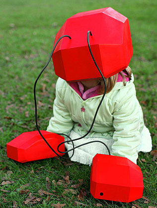
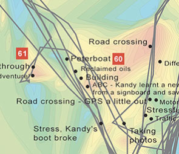
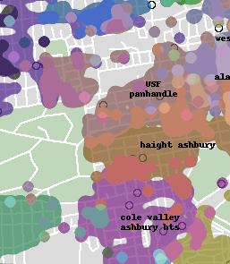

Scroll Magazine is an excellently published paper magazine by the lovely Maxine Sherrin and John Allsopp. If you haven’t seen a copy they are beautifully put together. For the second issue, I was asked to write an article on the theme “Place”. I did my best, but after a few back and forths, the article end-up in a very different way than how it started. What end-up in the magazine is great, you’ll have to get your hands on a PDF copy. What follows is the original submission which is much more abstract and embellished. It probably didn’t fit the overall theme of “… for web professionals”, so its finds a home here instead.
At length did cross an Albatross,
Thorough the fog it came;
As if it had been a Christian soul,
We hailed it in God’s name.It ate the food it ne’er had eat,
And round and round it flew.
The ice did split with a thunder-fit;
The helmsman steered us through !And lo ! the Albatross proveth a bird of good omen, and followeth the ship as it returned northward through fog and floating ice.
In 01978, the first round of GPS satellites were launched into geosynchronous orbit. The second generation were deployed in 01989, but it wasn’t until 01995 when the system encircled the globe that it became fully operational. Today, GPS is so cheap it is almost ubiquitous. You’d be hard pressed to find any high-end phone that doesn’t have some sort of location awareness built-in. With this new found sense of location, projects that were previously unthinkable are now a reality. For example, the Open Street Map project started as one guy on a bicycle and has grown into a global community. Place has been recognized as so important that national governments are taking part, donating their location data to the project for the public good.
Ancient mariners didn’t have GPS, they navigated the seas with the help of the stars. Astronomy has been important throughout all of mankind’s history. Farmers worked the fields by the light of the harvest moon, solar and lunar events foretold the future and signaled earthlings of pending dangers. Throughout the centuries the night sky’s celestial clock has been an important time keeper as well as navigator.
In the late 01400s, Ephemeris was published by Johannes Müller von Königsberg. It detailed all the solar and astrological events for the years 01476 to 01506. No sailor dared to leave port without a copy. It was the definitive A-Z road map of the night’s sky. Columbus used this knowledge to convince Jamaican locals that Columbus’ god was angry at them and would turn the moon into a fiery ball unless food and provisions were offered to his crew. On queue, a lunar eclipse began and the locals feared for their lives. Hernando Cortez pulled the same trick with the Aztecs, but instead of convincing them that his god was angry, he convinced them he was their god, Quetzalcoatl—the rest is history.
In this modern day, my living room is a wash with small LED lights. Bleeping out of the darkness from VCRs, DVD players, gaming consoles, phones, computers, and monitors along with all sorts of other random devices who blink, pulse and glow. These are the new stars of the digital age forming entertainment constellations across the heavens of my apartment. Much like the ancient mariners before me, I have learned to use this artificial night sky to navigate. Late at night coming home, or traveling across the house to get something from the kitchen, I no longer need to turn on the lights. The relative position of my LED stars and their parallax allows me to avoid furniture and other hazards as I make my voyage across the seas to distant lands. LEDs form modern day constellation for us all. They give us relative placement in our own lives as well as a guiding north star to ground our location.
We Don’t Live on a Flat World
But place is much more than just a point to guide us. It’s not just a latitude, longitude and altitude. The tip of Mount Everest isn’t just an x, y and z on a map, it is an experience, a story, an expedition. Everest isn’t unique, every place has some meaning to someone. If we begin to look at place in a new context, then it brings out new meanings.
Animals in nature have a more acute awareness of their surroundings than we humans do. They have heightened senses of smell, vision and even senses we lack. They are in tune with nature, which is something humans have lost as we created artificial surroundings in the form of cities, buildings, cars and airplanes. Several projects have begun to explore these relationships between life and the technological world around us. By taking place as the starting point and layering more information on top, some very interesting observations make themselves known.
 As a student project for the Royal College of Art, Chris Woebken worked on allowing humans to experience animal superpowers. One experiment allowed participants to get in-touch with their bird ancestry. Pigeons and other birds have a built-in internal compass, allowing them to understand direction. To mimic this, he connected a small vibrating gyro scope, like the ones you have in your mobile phone, with a digital compass. Volunteers wore this device heads and every time they pointed northwards, they got a little buzz. It gave them an inherent sense of direction so they could better orient themselves in unfamiliar surroundings. Others have created similar projects called “The Haptic Belt” or “Clown Belt” which has a series of vibrating motors spaced evenly around a belt. One will constantly buzz giving you constant feedback to which way is north. This is just one experiment in layering understanding on top of place to give more meaning.
Christian Nold took a similar approach, but instead of simply giving feedback to the customer, he recorded much more information than which way is north. He attached a GPS and a Galvanic Skin Response (GSR) device to his volunteers and then sent them out to walk around the city. The GPS could track the volunteer’s location and the GSR would record their heart-rate and blood-pressure. When they returned, he would download the data and together they would discuss when, where and why they had increased anxiety in certain areas. People’s experiences and memories effect their emotional state, triggered by place. People had warm feelings as they passed their grandparents’ former home. They were stressed as they had to cross an eight lane road and happy down by the waterfront. From all of this data, he created something he called “Emotional Maps“.
These maps explore place in a different way. We are used to functional or task based maps – I need a bakery or I am hungry. Instead, these emotional maps mark relaxing locations, high-stress places and everything in between. They are new ways to explore different “zones” of the city based on emotional responses.
“The Neighborhoods Project” is another example of demonstrating what place means to us. Instead of using complicated equipment and having volunteers march around the city, they simply asked people what neighborhood they live in. This is more difficult because there are no definitive boundaries of where a neighborhood ends and the next begins. They tend to blur together, overlap and mix. As property on one side of the street might be more valuable than the other, people tend to stretch the truth about where their house is located. All of this data was collected and plotted on a map giving heat-map style result. Some areas you can defiantly say are in a certain neighborhood, while in other areas the correlation is weaker or two neighborhoods blur together. Yet, there are some very definitive breaks between neighborhoods as well. All of this leads us to ask questions about how concrete our idea of place really is? Maybe the trend is that a house is in a certain neighborhood, but 50 years from now, the residence might disagree. Nothing about the physical location has moved, it is still the same place geographically, but socially we could be taking about two very distinct locations.
Sailing Beyond Where
“Where” has become so ubiquitous and cheap that it’s given to us for virtually free through APIs, references and physical devices. In the times of the ancient mariner, the first thing pirates would steal from a ship was not the gold or cargo, but the maps. We have come along way from risking death when stealing a map, to getting turn-by-turn instructions from our sat-navs, yet Place is still far from being fully integrated on the web.
Maybe, this is because raw geo-data about a place is not enough. To know the “where” is important, but more than that is the human perspective. Different individuals apply different meanings to the same location. Their personal histories, cultural upbringing and memories all bring more to the experience than just a latitude and longitude.
Successful sites meld place and experience into an exciting and engaging way beyond just a flat world with a thumbtack and a bubble. Place needs to tell a story. It needs to convey an experience. It needs to provide meaning. How we move beyond just “where” and use it to augment our lives will not only be an ever changing, but an exciting process to observe.
Where will the albatross lead us next?